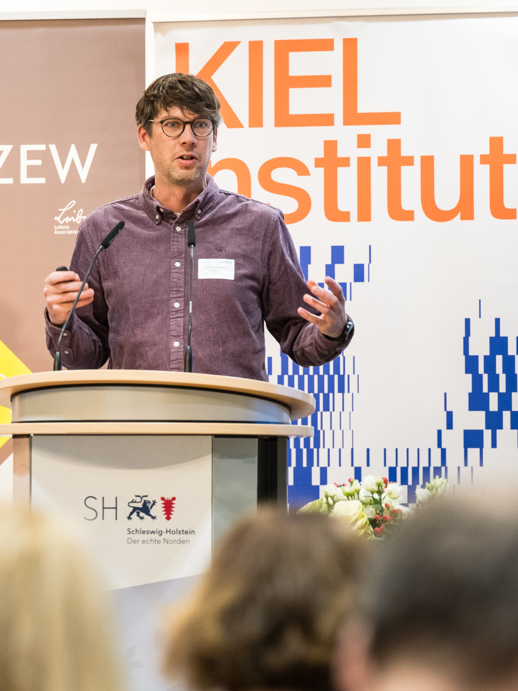
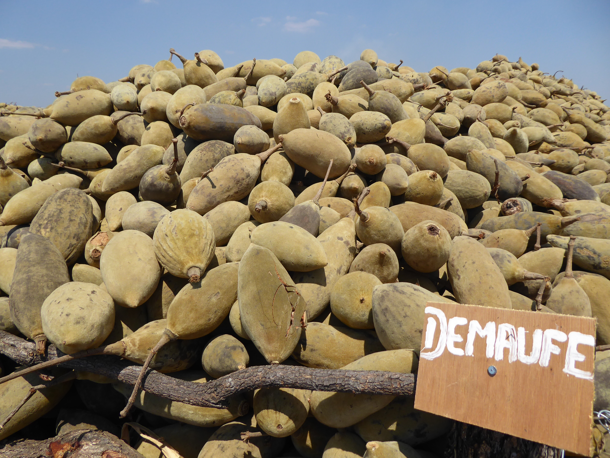

About
I am an economist and postdoctoral researcher at the Kiel Institute for the World Economy, where I serve as Deputy Scientific Lead of the Industrial Policy Lab.
My research sits at the intersection of international economics, industrial policy and environmental economics. I study firm behaviour in global value chains, the effects of foreign direct investment and the role of industrial policy in technological competition and the green transformation. I work primarily with firm-level and policy data and use applied microeconometric methods.
I connect this research to policy and practice by working with ministries, international organisations and firms, contributing to applied projects and engaging in public debate.
Selected Research
Upstreamness, Foreign Environmental Regulation and CO₂ Emissions in Indian Manufacturing Firms
Why upstream firms are more emission-intensive and whether exports to markets with stringent environmental regulation encourage cleaner production.
Green Gifts from Abroad? FDI and Firms’ Green Management
When foreign ownership encourages firms to adopt green management practices and how this relationship depends on host- and home-country conditions.
My current research examines subnational competition for hydrogen leadership in China, public financial support and policy mixes for firms’ environmental innovation and the interaction between foreign ownership, value-chain position and pollution abatement in Chinese manufacturing.

Research Themes
Industrial Policy & Geoeconomics
The design and effectiveness of policies that seek to build technological capabilities, strengthen competitiveness and reduce strategic dependencies.
Global Value Chains & FDI
How firms’ positions in international production networks and foreign ownership affect innovation, environmental performance and economic development.
Green Innovation & Transformation
How public support, regulation and market incentives influence firms’ adoption of environmental innovations and clean technologies.
Policy & Public Engagement
My policy work translates economic research and analysis into practical choices about policy design. Through the Industrial Policy Lab, I assess how instruments such as public financial support, procurement, local-content requirements and conditions on foreign investment can advance decarbonisation, resilience and competitiveness while preserving competition.
Over the past decade, I have contributed to research, evaluation and policy projects for German federal ministries, the European Parliament, UNIDO and GIZ. I have also worked with researchers at the European Commission’s Joint Research Centre during a three-month research visit in Seville.
I regularly contribute interviews and commentary on economic policy to dpa, Deutschlandfunk, NDR, MDR, ARD, Table.Media (China.Table) and Tagesspiegel Background.

Consultancy & International Projects
Since 2016, I have completed more than 20 assignments and over 500 consulting days as an independent consultant and international expert in development cooperation.
My work for GIZ, GFA Consulting Group, UNIDO and other partners covers research, survey design, statistical sampling, monitoring and evaluation, training and quality assurance. I have worked as a team leader, coordinator and trainer, with field experience in Mozambique and Kenya.
Evaluation & Survey Design
Designing sampling strategies, data collections and quantitative and qualitative evaluations.Project Leadership & Quality Assurance
Coordinating project teams and data collections while ensuring methodological quality.Training & Local Collaboration
Working with institutions, project teams and local partners to translate evidence into practical recommendations.